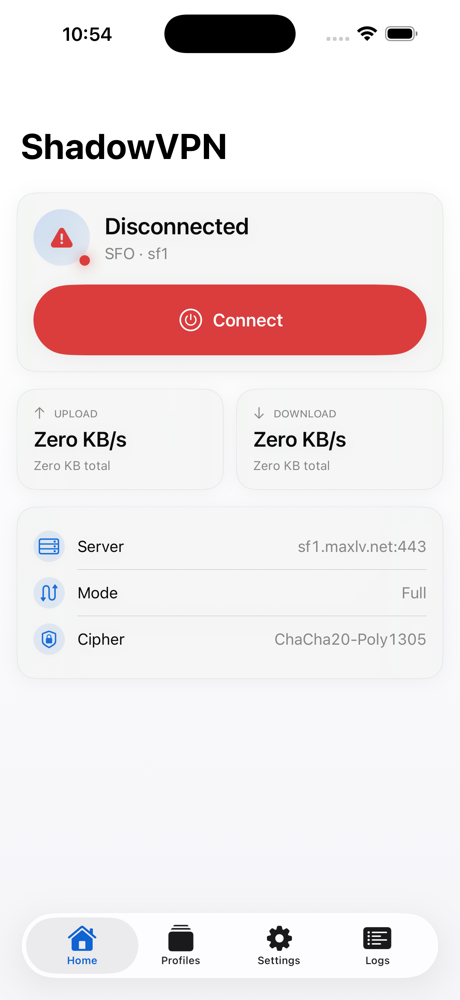
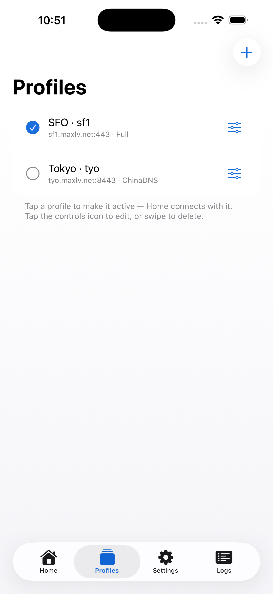
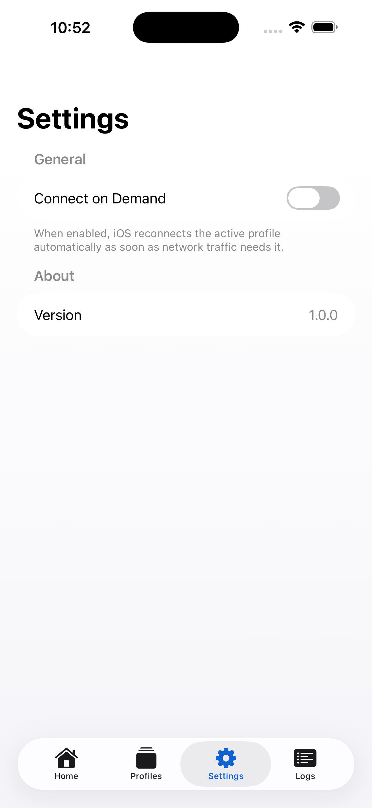
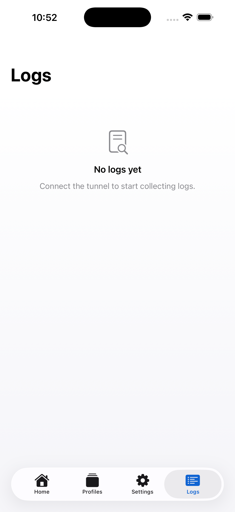

ShadowVPN is a minimal UDP tunnel built on the shadowsocks AEAD scheme. You bring your own server — nothing is proxied through us, and there's no account to create.
Requires iOS 17+ and TestFlight · Bring your own ShadowVPN server
Why ShadowVPN
A SwiftUI app driving Apple's Network Extension, with a compact Rust core for the data plane. No SOCKS layer, no userland TCP stack, no telemetry.
A lightweight raw-IP data plane — one IP packet per datagram, no proxy overhead.
shadowsocks AEAD ciphers (AES-GCM, ChaCha20-Poly1305) protect every datagram.
Route only what you need and bypass traffic by country with an on-device GeoIP set.
Store several servers and switch between them — or import one by scanning a QR code.
Optional QUIC/HTTP-3 or Base64 shaping so datagrams blend in with ordinary traffic.
Your keys and configuration never leave the device. No accounts, no servers of ours.
A look inside
Connect from the Home tab, manage servers in Profiles, tune routing in Settings, and watch the live engine log.

Home & live traffic
Profiles & QR import
Routing & ciphers
Live engine logGet started
ShadowVPN is bring-your-own-server: run the open-source ShadowVPN server, then point the app at it.
Deploy the open-source ShadowVPN server on any VPS, with a password and cipher.
Install the beta, then enter your server details — or scan a shadowvpn:// QR code to import it instantly.
Flip the toggle. iOS asks once to add the VPN configuration, and you're tunneling.
Public beta
Open the link on your iPhone or iPad to install the latest build through Apple TestFlight.
testflight.apple.com/join/anD9vU5M